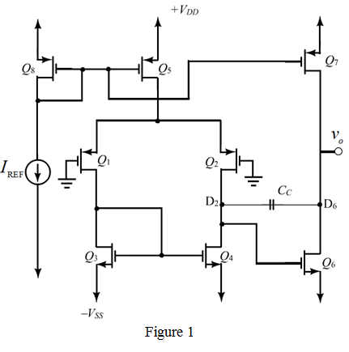

Form the circuit shown in Figure1, the offset current is,

Therefore, the output current at is .
Refer to Figure 8.41 in the text book.
Redraw the circuit diagram as shown in Figure 1.

Form the circuit shown in Figure1, the offset current is,
Therefore, the output current at is .
The offset voltage is,
Substitute in equation.
Therefore, the offset voltage is .